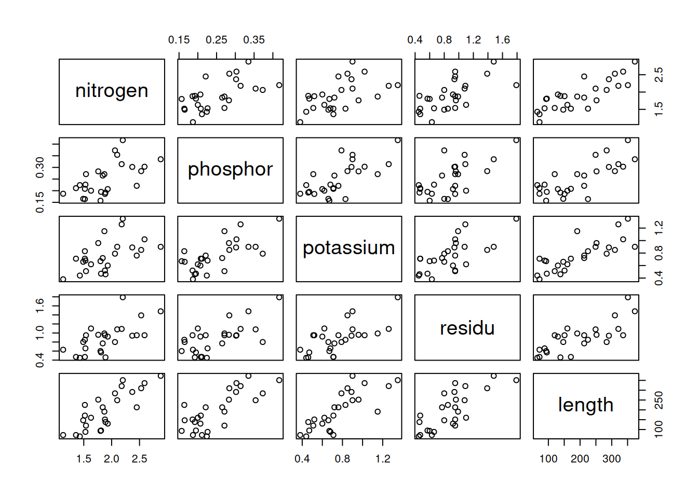

If there are not too variables in the dataset (4-5 at most), it is often a good idea to make a pairwise scatterplot of the data. This will give you already some indication of (linear) relations between predictors and the outcome, or about any issues with multicollinearity (see later).
pairs(needles)

Forward model building
Throughout this section and the following ones, we will use a significance level of \(\alpha = 0.10\). That means that we will add a term to our model if its p-value is below 10%.
Simple linear models
We first build a series of simple regression models, one for each predictor. We look for the model whose predictor is most significant.
m1 <-lm(length ~ nitrogen, data = needles)summary(m1)
Call:
lm(formula = length ~ nitrogen, data = needles)
Residuals:
Min 1Q Median 3Q Max
-86.011 -42.385 3.295 26.201 98.621
Coefficients:
Estimate Std. Error t value Pr(>|t|)
(Intercept) -151.14 51.08 -2.959 0.00684 **
nitrogen 183.42 26.31 6.971 3.3e-07 ***
---
Signif. codes: 0 '***' 0.001 '**' 0.01 '*' 0.05 '.' 0.1 ' ' 1
Residual standard error: 56.04 on 24 degrees of freedom
Multiple R-squared: 0.6694, Adjusted R-squared: 0.6556
F-statistic: 48.59 on 1 and 24 DF, p-value: 3.298e-07
m2 <-lm(length ~ phosphor, data = needles)summary(m2)
Call:
lm(formula = length ~ phosphor, data = needles)
Residuals:
Min 1Q Median 3Q Max
-103.398 -42.582 2.331 40.845 120.220
Coefficients:
Estimate Std. Error t value Pr(>|t|)
(Intercept) -69.11 45.99 -1.503 0.146
phosphor 1060.29 177.08 5.988 3.51e-06 ***
---
Signif. codes: 0 '***' 0.001 '**' 0.01 '*' 0.05 '.' 0.1 ' ' 1
Residual standard error: 61.71 on 24 degrees of freedom
Multiple R-squared: 0.599, Adjusted R-squared: 0.5823
F-statistic: 35.85 on 1 and 24 DF, p-value: 3.511e-06
m3 <-lm(length ~ potassium, data = needles)summary(m3)
Call:
lm(formula = length ~ potassium, data = needles)
Residuals:
Min 1Q Median 3Q Max
-123.572 -22.934 -2.391 28.872 134.441
Coefficients:
Estimate Std. Error t value Pr(>|t|)
(Intercept) -35.09 38.33 -0.915 0.369
potassium 304.05 47.91 6.346 1.46e-06 ***
---
Signif. codes: 0 '***' 0.001 '**' 0.01 '*' 0.05 '.' 0.1 ' ' 1
Residual standard error: 59.55 on 24 degrees of freedom
Multiple R-squared: 0.6266, Adjusted R-squared: 0.611
F-statistic: 40.27 on 1 and 24 DF, p-value: 1.465e-06
m4 <-lm(length ~ residu, data = needles)summary(m4)
Call:
lm(formula = length ~ residu, data = needles)
Residuals:
Min 1Q Median 3Q Max
-90.74 -46.82 -14.47 41.63 125.26
Coefficients:
Estimate Std. Error t value Pr(>|t|)
(Intercept) -3.912 36.292 -0.108 0.915
residu 225.952 38.502 5.869 4.71e-06 ***
---
Signif. codes: 0 '***' 0.001 '**' 0.01 '*' 0.05 '.' 0.1 ' ' 1
Residual standard error: 62.45 on 24 degrees of freedom
Multiple R-squared: 0.5893, Adjusted R-squared: 0.5722
F-statistic: 34.44 on 1 and 24 DF, p-value: 4.711e-06
The t-values for the predictors of model 1 through 4 are respectively 6.971, 5.988, 6.346, and 5.869. We choose the model with the largest absolute t-value (note that this corresponds to the smallest p-value), meaning that we choose model 1.
Adding one predictor
We now add one more predictor (of the three predictors that are left).
m12 <-lm(length ~ nitrogen + phosphor, data = needles)summary(m12)
Call:
lm(formula = length ~ nitrogen + phosphor, data = needles)
Residuals:
Min 1Q Median 3Q Max
-57.834 -34.950 -0.539 20.364 127.287
Coefficients:
Estimate Std. Error t value Pr(>|t|)
(Intercept) -189.64 42.53 -4.460 0.000179 ***
nitrogen 123.83 26.62 4.652 0.000111 ***
phosphor 604.44 162.65 3.716 0.001135 **
---
Signif. codes: 0 '***' 0.001 '**' 0.01 '*' 0.05 '.' 0.1 ' ' 1
Residual standard error: 45.25 on 23 degrees of freedom
Multiple R-squared: 0.7934, Adjusted R-squared: 0.7755
F-statistic: 44.17 on 2 and 23 DF, p-value: 1.329e-08
m13 <-lm(length ~ nitrogen + potassium, data = needles)summary(m13)
Call:
lm(formula = length ~ nitrogen + potassium, data = needles)
Residuals:
Min 1Q Median 3Q Max
-75.625 -30.298 5.557 27.527 61.897
Coefficients:
Estimate Std. Error t value Pr(>|t|)
(Intercept) -180.87 36.94 -4.896 6.04e-05 ***
nitrogen 123.26 22.41 5.499 1.36e-05 ***
potassium 188.69 38.40 4.913 5.79e-05 ***
---
Signif. codes: 0 '***' 0.001 '**' 0.01 '*' 0.05 '.' 0.1 ' ' 1
Residual standard error: 39.98 on 23 degrees of freedom
Multiple R-squared: 0.8387, Adjusted R-squared: 0.8247
F-statistic: 59.79 on 2 and 23 DF, p-value: 7.727e-10
m14 <-lm(length ~ nitrogen + residu, data = needles)summary(m14)
Call:
lm(formula = length ~ nitrogen + residu, data = needles)
Residuals:
Min 1Q Median 3Q Max
-74.743 -34.276 -7.326 35.400 79.455
Coefficients:
Estimate Std. Error t value Pr(>|t|)
(Intercept) -144.82 44.01 -3.291 0.003202 **
nitrogen 123.88 29.83 4.152 0.000385 ***
residu 120.07 39.17 3.065 0.005477 **
---
Signif. codes: 0 '***' 0.001 '**' 0.01 '*' 0.05 '.' 0.1 ' ' 1
Residual standard error: 48.23 on 23 degrees of freedom
Multiple R-squared: 0.7653, Adjusted R-squared: 0.7449
F-statistic: 37.5 on 2 and 23 DF, p-value: 5.769e-08
The next most significant term is potassium, so we choose model13 that includes nitrogen and potassium.
Adding yet more predictors
We continue adding predictors. We start with the model that includes nitrogen and potassium and try to add more predictors, checking at each step whether the added predictor is significant.
Call:
lm(formula = length ~ nitrogen + potassium + phosphor + residu,
data = needles)
Residuals:
Min 1Q Median 3Q Max
-61.56 -29.11 10.28 24.72 80.29
Coefficients:
Estimate Std. Error t value Pr(>|t|)
(Intercept) -185.33 36.30 -5.106 4.67e-05 ***
nitrogen 97.76 24.57 3.979 0.000684 ***
potassium 126.57 46.43 2.726 0.012653 *
phosphor 256.97 169.91 1.512 0.145321
residu 40.28 36.61 1.100 0.283773
---
Signif. codes: 0 '***' 0.001 '**' 0.01 '*' 0.05 '.' 0.1 ' ' 1
Residual standard error: 37.87 on 21 degrees of freedom
Multiple R-squared: 0.8679, Adjusted R-squared: 0.8427
F-statistic: 34.48 on 4 and 21 DF, p-value: 5.967e-09
Automating the model building procedure
We had to build no less than 10 models before settling on the final one. Luckily R contains automated model building functions, using the step function. This function can build a model using the forward or backward procedure. Here we use it for forward model building: step will repeatedly try to add predictors to the model, until it reaches the full model (the model with all predictors included). At each step, the function computes the so-called AIC (Akaike Information Coefficient) of the model, a measure for the complexity of the model that we will encounter later in the course. Models with lower AIC are generally simpler and better able to explain the data (but this is only a rule-of-thumb).
empty <-lm(length ~1, data = needles) # a model with only an interceptfull <-lm(length ~ ., data = needles) # a model with all predictorsmodel_forward <-step( empty,scope =list(lower = empty, upper = full),direction ="forward")
Call:
lm(formula = length ~ nitrogen + potassium + phosphor, data = needles)
Residuals:
Min 1Q Median 3Q Max
-64.558 -32.031 6.262 27.049 85.526
Coefficients:
Estimate Std. Error t value Pr(>|t|)
(Intercept) -193.07 35.78 -5.396 2.03e-05 ***
nitrogen 107.80 22.92 4.702 0.000109 ***
potassium 143.13 44.13 3.243 0.003731 **
phosphor 304.24 165.17 1.842 0.078998 .
---
Signif. codes: 0 '***' 0.001 '**' 0.01 '*' 0.05 '.' 0.1 ' ' 1
Residual standard error: 38.05 on 22 degrees of freedom
Multiple R-squared: 0.8602, Adjusted R-squared: 0.8412
F-statistic: 45.14 on 3 and 22 DF, p-value: 1.435e-09
Looking at the final model, we see that we get the exact same model as with our earlier, manual model building procedure. This is not guaranteed; different model building procedures may result in different models.
Interaction terms
Lastly, we add two interaction terms to our model, to incorporate interactions between residu and phosphor on the one hand, and phosphor and nitrogen on the other. As discussed in the theory lecture, you would typically add these interaction terms because you think (on biological or physical grounds) that they should be there. You wouldn’t perform an exhaustive search across all interaction terms.
If we add an interaction term, then the individual variables should also be present. We can achieve that in two ways: first, by using the * syntax:
Note that we keep phosphor and nitrogen in the model even though they are individually non-significant. As long as there is an interaction term involving a variable, that variable stays in the model.
Diagnostic plots
Once you have built a model, don’t forget to check the diagnostic plots and adjust the model as needed. Judging from the diagnostic plots, our model (with interaction terms) is fine and doesn’t require any adjustments at this stage.